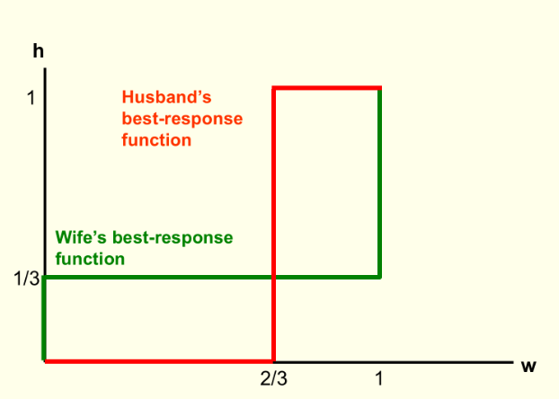

6 Strategic games
Elements of a game
A ‘strategic game’ (also called a ‘normal-form game, I believe’) must specify
Players,
Actions these players may choose, and
Payoffs resulting from the combination of players’ choices
Important note on interpretation of payoffs/preferences in game theory:
The ‘utility’ (payoff) to each player arising from the combination of each player’s strategies (and chance) in the game
May include both ‘money earned’ and other considerations; all this is summarised in the payoff numbers
The goal of each player is to obtain the largest payoff that she can obtain (not just to ‘win’)
Note: E.g., each player prefers to get 2 in utility and have the other player get 8 than for both to get 1
Note: In this context it is typically not helpful to complain ‘I don’t think players will maximise their payoffs, because they also care about how others do, etc.’ Whatever it is they care about can be expressed in the theoretical payoffs.
However, these concerns are relevant to experiments that may incorrectly assume participants are maximising only their monetary payoffs.
The game of ‘chicken’:

Who are the players in Chicken?
What are the actions (pure strategies) in Chicken?
What are the payoffs in Chicken?
The north-facing car ‘North’ and 2. the south-facing car ‘South’
For both N and S, two actions – Pull-off, Straight.
Payoffs are a function of the action profile, discussed below
Payoffs in ‘Chicken’; what makes a game a ‘game of Chicken?’
Both pull-off \(\rightarrow\) Tie
N Straight, S pulls off \(\rightarrow\) N ‘wins’, S ‘loses’
N pulls off, S straight \(\rightarrow\) N ‘loses’, S ‘wins’
Both straight \(\rightarrow\) crash
To meaningfully convey this game (at least according to its standard characterization in Economics) payoffs must follow: Win \(\succ\) tie \(\succ\) lose \(\succ\) crash
Here is an example of payoffs that capture the essential strategic considerations in ‘Chicken’.
Payoffs are written as a matrix below: by convention, the ‘Row’ player’s payoffs are specified first in each cell, followed by the Column player’s payoffs
| Pull off | Straight | |
|---|---|---|
| Pull off | (0,0) | (-1,1) |
| Straight | (1,-1) | (-10,-10) |
Note that what will matter are the relative payoffs and not the absolute levels… (at least, if we ignore ‘mixed strategies’ for now).
*For another example of a game or ‘category of 2x2 games’, please see the famous Prisoners’ dillemma, depicted below.
O-R define the strategic game as a formal mathematical object:
Remember that formal mathematical definitions help us avoid ambiguity, and allow us to use the ‘general tools of maths’ to construct proofs. E.g., ‘fixed point theorems’ can be applied to prove the existence of an equilibrium in some cases.
A strategic game\(\langle N , (A^i)_{i \in N}, (\succsim^i) i \in N \rangle\) consists of
players: a set \(N = \{1,..., n\}\)
(However, we will mostly consider 2-player games)
actions: for each player \(i \in N\) , a set \(A_i\) of actions
This action set may be discrete (e.g., \(A_i = \{Yes. No\}\)) or continuous (e.g., a firm may choose a positive quantity \(q\), so \(A_i = q \in R_+\)).
preferences: for each player \(i \in N\), a preference relation \(\succsim^i\) over the set \(A = \times_{i \in N} A^i\) of action profiles.
I.e., each player has preferences over the ‘outcome’ of the game, the combination of actions chosen by each player (referred to as an ‘action profile’).
I believe the \(\times_{i \in N}\) sign represents the ‘Cartesian product’, i.e., the set of all combinations of one of each element.
Note that preferences are defined directly over the set of action profiles, unlike in market models.
A function \(u_i : A \righttarrow R\) that represents \(\succsim^i\) is a payoff function for player \(i\).
The ‘Strategic game’ form is typically used to depict simultaneous games; where all players make their choice at the same time (or if not at the same time, no players know the choices made by other players when their choices are made), with ‘complete information’ (all players know whom they are playing against, and what these players’ payoffs are.)
With only two players and a finite number of actions, these games are often displayed using a matrix, such as (again) for the ‘Chicken’ game below.

Figure 6.1: A matrix depicting players actions and payoffs in the Chicken game
In contrast, the Extensive game form is typically used to depict a game involving a (finite or infinite) sequence of choices made by players; we will return to this further below. Extensive-form games with a finite number of actions are often depicted using ‘game trees’, as in the ‘simplified ultimatum game’ below.
However, technically both simultaneous and sequential games can be depicted in either strategic form or extensive form. For an example, see the prisoners dilemma depiction below.

Figure 6.2: Game tree - Simplified Ultimatum Game
6.1 ‘Individual optimization considerations’; best responses, ‘rationalizability’
Note: O-R jump right into the definition of Nash Equilibrium (NE) at this point. I prefer to first introduce individual optimization and strategic considerations (unfold discussion of why). I introduce these concepts somewhat less formally than the O-R depict NE (but of course we could depict rationalizability more formally; I will give you some ‘taste’ of this).
In the fold below, I discuss this issue further.
Nash Equilibrium (NE) does not automatically arise from players’ optimization (nor from players’ optimization under “common knowledge of rationality” which we will get to soon). Nash Equilibrium (NE) simply represents a “stable point” from which no player would want to ‘deviate unilaterally’; however there multiple equilibria (or no ‘pure strategy equilibrium’), and, particularly in the absence of communication, players may fail to coordinate on an equilibrium. Both may regret their actions, each having thought the other player would have made a different choice.
I prefer to begin by thinking about each individual player strategic considerations, and then to introduce the idea of ‘Rationalizability’ in a strategic context (calculated through ‘iterated strict dominance’, and potentially justified in a situation of ‘common knowledge of rationality’. There are some connections between NE and Rationalizability; e.g., where there is a unique rationalizable outcome, it also represents a unique Nash Equilibrium. But they are fundamentally different concepts: Rationalizability represents the consequence of players optimizing, while NE simply represents a ‘stable point’.
In Osborne and Rubinstein’s 1994 text, ‘A Course in Game Theory’, they note:
If the game is a one-shot event in which all players choose their actions simultaneously then it is not clear how each player can know the other players’ equilibrium actions … [as in NE… thus we consider solution concepts] In which players’ believes about each other’s actions are not assume to be correct but are constrained by considerations of rationality…
6.1.1 Common knowledge
- What all players know, and
- all players know that all other players know,
- and all players know that all other players know that all other players know,
- and all players know that all other players know that all other players know that all other players know,
etc.
Note: We always assume that the rules of the game are common knowledge.
Why is common knowledge important?

Among other things, you may be stuck on an island ‘with 100 blue-eyed people, 100 brown-eyed people, and the Guru’… (unfold if you like puzzles!)
Warning: this puzzle will do your head in
There is an island with 1000 people. - 100 of them have blue eyes, 900 have brown eyes - There are no reflective surfaces
By custom or law:
He who knows own eye colour must commit suicide the next day in the town square No one can discuss another person’s eye colour.
Now an American tourist visits, and says “It’s so nice to see one or more people with blue eyes in this part of the world”.
Q: What effect, if any, does this faux pas have on the island?
Ans: If his statement is ‘common knowledge’ then all 100 blue-eyed people will kill themselves on day 100 after the speech.!
- A’s Best Response (BR) to strategy S:
a strategy for player A that gives her the highest payoff of all her possible strategies, given that the other player(s) play S
Note: The BR is a function of the others’ strategies S; it may take a different value for each strategy the others play.
6.1.2 Dominant, dominated strategies and rationalizability
Again, iterated strict dominance and rationalizability are NOT covered in the O-R text, but I want you to learn it. As a prediction it is much easier to justify than Nash Equilibrium.
- Dominant strategy
- A single strategy that is a best response to any of the other player’s strategies.
- A simple prediction: a ‘rational’ player will play a dominant strategy, if she has one.
- Dominated strategy
- Strategy A is dominated by strategy B if B yields higher payoffs for any of the other player’s strategies
- A simple prediction: a rational player will never play a dominated strategy
Why?: because a dominated strategy cannot be optimal for any belief about what the other player(s) will do
With only two strategies to choose among these concepts are the same.
With more than two, if there is a Dominant strategy this means that all other strategies are dominated by it. We see this in examples below.
What is the prediction of ‘players play dominant strategies’ in the Prisoner’s dilemma"

Here it clearly predicts that both will confess. However, in some other games this concept may have no clear prediction.
Food for thought: if a player’s Best response is unaffected by the other player’s best response, is this really a game with “strategic interaction”?
Perhaps the Prisoner’s Dillemma, arguably the most famous game, and one that dramatically illustrates the potential for group interest to depart from individual interest… is a very boring game; if it’s even meaningfully a game. Whatever you choose has no bearing on whatever my best choice might be!

What does ‘players play dominant strategies’ predict above? What about ‘players never play dominated strategies’?
6.1.3 Rationalisability/ Iterated strict dominance
Extending this …
Rationality assumption: the players are rational.
We know rational players will not play dominated strategies The players themselves know this.
Common Knowledge of Rationality assumption:
The players know all other players are rational. The players know all players know all players are rational. The players know (all players know … ad infinitum) all players are rational.
- Thus the players know what the other players will never do, and eliminate these from consideration
- The players will not play a strategy if another strategy is always better against this reduced set of possibilities
- Etc.
This process is called ‘Iterated Strict Dominance’ (ISD) We will call strategies that survive ISD ‘rationalizable’ strategies.
Rationalizability has a somewhat different conceptual justification than ISD, but they are closely related.
There are differences between ‘rationalizable’ and ‘survives ISD’ but for our purposes these are basically the same. At least in a finite strategic game (a finite number of actions), the set of (actions leading to) outcomes that survive ISD is the set of profiles of rationalizable actions.
A formal definition of rationalizability (From O-R 1994, p. 61):
An action \(a_i \in A_i\) is rationalizable in the strategic game \(\langle N, (A_i), (u_i)\rangle\)
(this notation is similar to our notation, except that they are using a utility function \(u_i\) to depict preferences)
if for each \(j \in N\) there is a set \(Z_j \subseteq A_j\) such that
(a subset of the action space for each player… think of)
\(a_i \in Z_i\)
(\(i\)’s own action is in this set)
[and] every action \(a_j \in Z_j\) is a best response to a belief \(\mu_j(a_j)\) whose support is a subset of \(Z_{-j}\).
(Every player’s action is a best response to some belief about other players’ actions … where these actions are themselves best responses to some belief about other players’ actions, etc.)
ISD example; may yield a unique prediction:


However, there may be no dominated strategies, or there may be some, but still ISD may leave many possibilities:

6.2 Nash equilibrium
according to which a profile of actions is stable if no individual wants to deviate from her action given the other individuals’ actions
Compare to ‘market equilibrium’: given the equilibrium price and quantity, no market participant has an incentive to change his or her behaviour.
6.2.1 NE: Simple definition and discussion
I present a basic undergraduate-level explanation of this here. If this is already familiar an obvious to you, you may skip this and go right to the O-R reading.
If you are not familiar with this, you may find it helpful to read first before digging into the formal presentation.
- Nash equilibrium (NE)
- A set of strategies, one for each player, that are best responses against one another
If I play my BR to your chosen strategy and you’re playing your BR to mine, neither of us has an incentive to deviate — an equilibrium.
All games have at least one Nash equilibrium
- But it may be an equilibrium in ‘mixed strategies’ (involving randomisation)
Caveat: we might not expect such play to actually occur (particularly not in one-shot games)
In fact, two-player games will have an odd number of equilibria, at least if we include ‘mixed strategy Nash Equilibria’; you can see this by looking at the crosses of the BR functions
6.2.2 NE: Formal depiction
From O-R:
In a strategic game \(\langle N , (A^i)_{i \in N}, (\succsim^i) i \in N \rangle\)
an action profile \(a = (a^i) \in A\)
(profile of actions: one action chosen for each player \(i\))
is a Nash equilibrium if for every player \(i \in N\) we have
$(a^i, a^{−i}) ^i (x^i , a^{−i}) for all \(x^i \in A_i\)$
Note: \(a^{−i}\) denotes ‘the action chosen by all players other than player \(i\)’.
where \((x^i , a^{−i})\) denotes the action profile that differs from \(a\) only in that the action of individual \(i\) is \(x^i\) rather than \(a^i\).
Thus, again, in the above definition,each player’s action in action profile \(a\) is a best response to the other players’ actions … because no other choice would make player \(i\) better off, given what the others choose.
O-R similarly define a NE in terms of ‘each player best responding’ … defining $BR(a^{−i}) as “the set of player \(i\)’s best responses to \(a^{-1}\) and”action profile \(a\) is a Nash equilibrium if and only if \(a^i \in BR(a^{−i})\) for each player \(i\).
For a NE:
These need not be strict best responses; each player may have more than one best response to the other players’ choices in this strategy profile… all that it requires is that \(a^i\) is among the best responses.
We do not ask ‘If I changed my response and others correspondingly also changd their responses would I be better off’? (That would be closer to the Kantian equilibrium concept discussed in O-R). We just ask “if I change my response can I do better, given what others are doing.” If the answer is ‘no’, then I am best responding. If the answer is ‘no’ for all players, then all are best responding to each other, and this profile is a Nash equilibrium.
Remember that a Nash equilibrium is a property of an action profile (or a ‘strategy profile’), with one action or strategy for each player. It is not, strictly speaking, a property of an outcome nor a property of a set of payoffs. We can state “the payoffs consistent with Nash equilibrium are” … But we shouldn’t state “the Nash equilibrium is that each player gets payoffs 10”.
6.2.3 Note on O-R characterization of ‘Nash equilibrium’
O-R define a “Nash Equilibrium in a strategic game” as involving ‘pure strategies’ only. No player is randomizing.
Going with this definition, they state:
some strategic games do not have a Nash equilibrium.
This contrasts with the definition I have seen previously. In most text, Nash equilibrium is define to allow either mixed or pure strategies.
They later define “Mixed strategy equilibrium” and they note (but do not prove here):
every game in which each player’s set of actions is finite has a mixed strategy equilibrium.
As I said, I am more familiar with the definition of NE to include mixed strategies, does the above statement could be modified to be: “every game in which each player’s set of actions is finite has a Nash equilibrium, which may be in mixed strategies”.
By the way, even among infinite games, a Nash equilibrium (or “mixed strategy equilibrium”) is guaranteed to exist so long as the strategy sets are “compact” and the payoff functions are continuous.
6.3 Examples of strategic games
Please consider all of the examples in section 15.2-15.3, at least insofar as you find these interesting.
These illustrate an array of interesting and fundamental concepts:
We see:
- Games where the NE (and indeed the unique rationalisable strategies) defy both intuition and ‘actual play in experiments’, and where the NE does not maximise the player’s payoffs * – (Traveler’s dillemma, Prisoners’ dillemma, price and quantity setting, see also the ‘Keynsian Beauty contest’ or problem 5 in O-R) …
Although, as I mention elsewhere, in any interactive experiment it is hard to rule out that ‘social preferences’ may drive the results. We can only control the financial payoffs; we don’t know what the “true payoffs” are if players care about other players or about fairness etc.
Games with infinite strategy spaces (Traveller’s game, Auctions, Location games, Price and quantity-setting games,… )
Finite (matrix) games (Bach or Stravinsky, all the other ones where a matrix is displayed)
Coordination games (Bach or Stravinsky, Coordination game)*
Anti-coordination games (Odds or evens, Matching pennies)
‘Bach or Stravinsky’ is usually called the ‘Battle of the Sexes’, and the choices are ‘Ballet’ (preferred by the ‘Wife’) and ‘Boxing’ (‘Husband’s’ preference). Personally, I find this much easier to remember. If we want to subvert the stereotype here, We could think of the ballet as being extremely violent and the boxing match as a boxing match fought with feathers and balloons.
Games where actions are ‘strategic complements’ (e.g., Effort game)
Games where actions are ‘strategic substitutes’ (e.g., Cournot quantity-setting game)
These also present strategic insights at the core of several theory-heavy applied fields, such as
Auction Theory: First-price and Second-price auctions
Industrial Organization (firm strategy and antitrust): Location game (aka ‘Hotelling model’), Quantity-setting (Cournot), Price Setting (Bertrand), War of attrition (presented later)
Development economics and the study of cooperation: Effort Game,
Other examples are given in the practice problems; these involve legitimately interesting and relevant examples, not simply ‘busy work’
Note that I skip several sections of O-R here, for time considerations. I skip:
Existence of a Nash equilibrium (see also my note above on O-R’s unusual terminology). You may nonetheless find this worth reading, particularly if you love maths. The definition and discussion of ‘supermodular games’ is also fairly relevant; it comes up a bit in the literature.
Strictly competitive games (i.e., ‘zero sum games’) … have a look at the definition at least
Kantian equilibrium (a very interesting non-standard concept!)
6.4 Mixed strategy (Nash) equilibrium of strategic games
6.4.1 Simple presentation
I present a basic undergraduate-level explanation of this here. If this is already familiar an obvious to you, you may skip this and go right to the O-R discussion of mixed strategy equilibrium. However, if you are not familiar with this, you may find it helpful to read first before digging into the formal presentation.
Note: I use the terminology of ‘pure and mixed strategies’ (slightly different from O-R) here
- Pure strategy
- Consists of a single action played with certainty
- Mixed strategy
- Assigns a probability to each possible action
Remember: as claimed above, in finite games (and a wide class of infinite games) there is always at least one NE. If there is no pure strategy NE, there will be a NE in mixed strategies.
Matching pennies: mixed strategies
Intuition
If you choose heads/tails half the time then I’m indifferent between heads or tails. Thus, choosing ‘heads’ half the time is among my best responses.
If I choose heads half the time then you’re indifferent between heads/tails. Thus choosing heads half the time is among your best responses
So, technically, each of us choosing heads half the time is a NE.
But it is called a ‘weak’ NE because either of us would do no worse if he deviated alone.
Battle of sexes: mixed strategies

Figure 6.3: Image source: Nicholson and Snyder
Note: Wife wants to end up at the same place as her husband but doesn’t know where he is going.
If she believes that he will always go to the ballet she should always go to the ballet.
If she believes he will always go boxing, she should go boxing.
What other beliefs may she have?
We want to derive the best response functions, and find the intersection(s) of these.
Let \(h\) represent the probability husband chooses Ballet
Figure 6.4: Source: Nicholson and Snyder
Wife’s BR:
- Wife chooses Ballet iff her Expected payoff of Ballet > Expected payoff of Boxing
I.e., \(2h > 1- h\), i.e, \(h > 1/3\)
Thus, wife goes to Ballet if she believes husband goes to Ballet more than 1/3 of the time
If she thinks he goes below 1/3 of the time she goes to Boxing
If she thinks he goes exactly 1/3 of the time she is indifferent

Note: This plots the value of w that best responds to h; the probability the wife goes Ballet given the probability the husband goes Boxing.
Let \(w\) denote the probability wife chooses Ballet
Husband’s BR:
Husband chooses Ballet iff his Expected payoff of Ballet > Expected payoff of Boxing
\[1w > 2- 2w\], i.e., \[w > 2/3\] … for these payoffs
Thus, husband goes to Ballet if he believes wife goes Ballet more than 2/3 of the time
If he thinks she goes less than 2/3 of the time he goes to Boxing
If she thinks he goes exactly 2/3 of the time he is indifferent
Note that now that we are considering mixed strategies the ratios of the payoffs may matter in computing the equilibrium mixing probabilities, and not only ‘which is larger’. Recall that this also was the case when we considered expected utility over uncertain outcomes.


Shortcut to computing this: only someone who is indifferent will randomise. (Otherwise they must strictly prefer one or the other action, so ‘mixing these’ cannot be optimal.)
Above, \(h=1/3\) makes wife indifferent, \(w=2/3\) makes husband indifferent
What’s all this rot?
Mixed strategies are not about ‘being unpredictable’, in spite of what some texts say ; these are one-shot games!
Some texts and authors make this point about ‘unpredictability’ but others disagree (including myself). Making sure that it is impossible to predict your later play from your previous is only important if you are playing the same game repeatedly, and being observed.
It makes a bit more sense if we think about ’populations.
Suppose in a population 1/3 of men go to Ballet and 2/3 of women go to Ballet: … these ratios are ‘stable’; no reason for systematic changes. On the other hand, if men always went to boxing and women to ballet this is not stable. A husband would be better off going to ballet … so the ratios should change over time.
This interpretation is presented and defended in more detail in O-R sections 15.7 and 15.8.
Computing payoffs with mixing
Remember, formally, a NE specifies strategies (strategy ‘profiles’) not payoffs
In the BOS the pure strategy equilibria were
- Husband: Boxing, Wife: Boxing
- Husband: Ballet, Wife: Ballet
The mixed-strategy NE was:
- Husband: go Ballet with probability h=1/3, Wife: Go Ballet with prob w=2/3.
The payoffs to these were, respectively
Husband: 2, Wife: 1
Husband: 1, Wife: 2
… ??
Payoff to the mixed strategy:
Payoffs are utilities: thus under the Expected Utility model we sum the utility of each outcome \(\times\) probability of that outcome
- Prob(Both go Ballet) = \(w \times h = \frac{2}{3} \times \frac{1}{3} = \frac{2}{9}\)
- Prob(Both go Boxing) = \((1-w)(1-h) = \frac{1}{3} \times \frac{2}{3} = \frac{2}{9}\)
- Prob(Wife Ballet, Husband Boxing) = \(w(1-h) = \frac{2}{3} \times \frac{2}{3} = \frac{4}{9}\)
- Prob(Wife Boxing, Husband Ballet) = \((1-w)(h) = \frac{1}{3} \times \frac{1}{3} = \frac{1}{9}\)
Thus, under the mixed strategy NE play:
\[U_{husb} = \frac{2}{9} \times 1 + \frac{2}{9} \times 2 + \frac{4}{9} \times 0 + \frac{1}{9} \times 0 = \frac{6}{9} = \frac{2}{3}\] \[U_{wife} = \frac{2}{3}\]
(The wife’s payoffs can be inferred from symmetry of problem, or they can be similarly calculated.)
6.4.2 More formal presentation
I will add some discussion here.
Example: War of attrition
This is a very important concept across a wide range of domains from biology to business strategy to law and politics.
I will add some discussion here.
6.5 Supplement: Prisoners’ Dillemma in Normal and extensive form
The original story:
Two individuals are arrested for a crime. They both know that they can only be convicted for a lesser crime, for which they get 2 years in jail. DA (Chief Crown Prosecutor) puts them in separate rooms and offers each the same deal. If you confess and your partner stays quiet you will only get 1 year in jail and they will get 10 years.
If you both confess you will each get 3 years.
What would you do? What would most people do? What does game theory predict?
Which outcome is definitely NOT Pareto-optimal (for the prisoners)?
Image source: Nicholson and Snyder, 2012
Figure 6.5: Prisoners dillemma – one set of payoffs
Normal form payoff matrix (also called ‘matrix form’)
Payoff convention: listed in the order (row’s payoffs, column’s payoffs)
A Prisoner’s Dilemma be like *
* Note to non-native-English speakers… I am shamelessly pandering to the youth here by trying to use their jargon. ‘Be like’ is not proper usage in the Queen’s English.
Two Players: (A and B, row and column, whatever)
Strategies (Actions): ‘Cooperate’ (C) or defect (D)
In normal form:
| Cooperate | Defect | |
|---|---|---|
| Cooperate | (R,R) | (S,T) |
| Defect | (T,S) | (P,P) |
To be a prisoner’s dilemma game the payoffs must satisfy \(T > R > P > S\)
I.e., Temptation \(>\) Reward \(>\) Punishment \(>\) Sucker
6.5.1 The Prisoners’ Dilemma: Extensive form
We can depict the same game in another format which we call the ‘extensive form’:

Above: the oval (usually this is given as dashed lines) depict the ‘information set’/
Sequential moves games without knowledge of previous moves are essentially equivalent to simultaneous move games. Here, B may ‘move second’ but he doesn’t know A’s move (in the graphic above, he doesn’t know “which side he is on”), so it’s as if this is simultaneous.
Order only matters if you observe the earlier action.